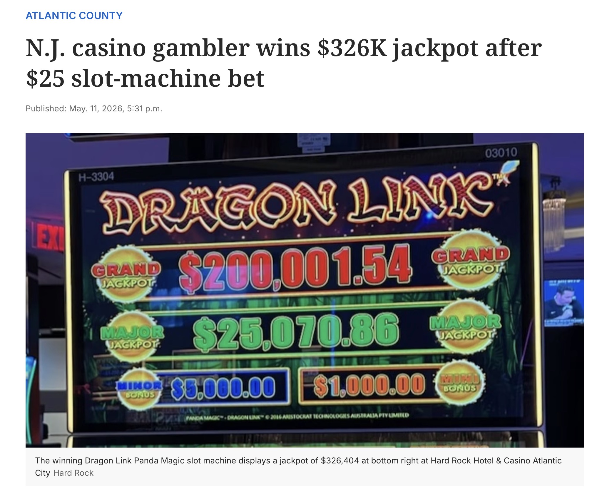
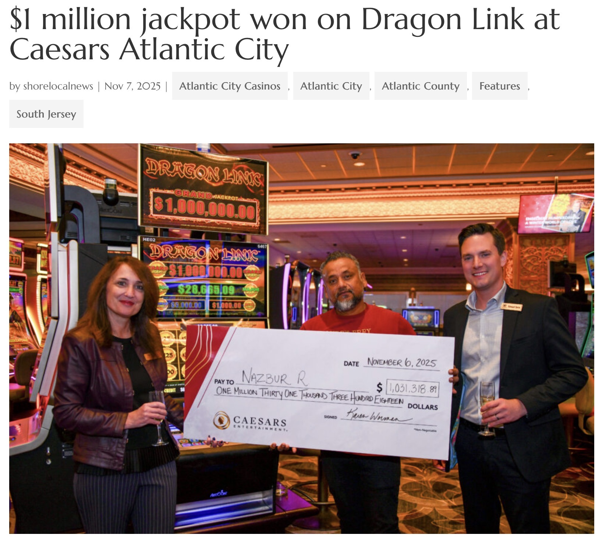
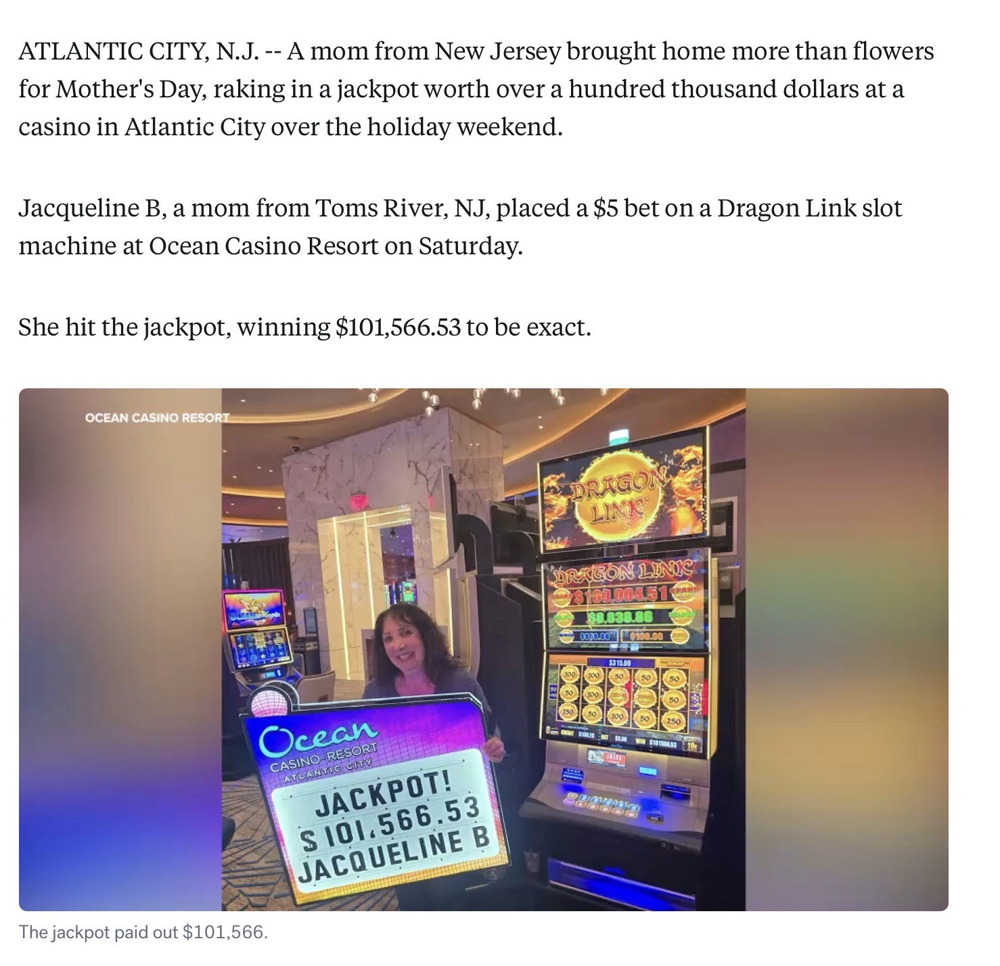
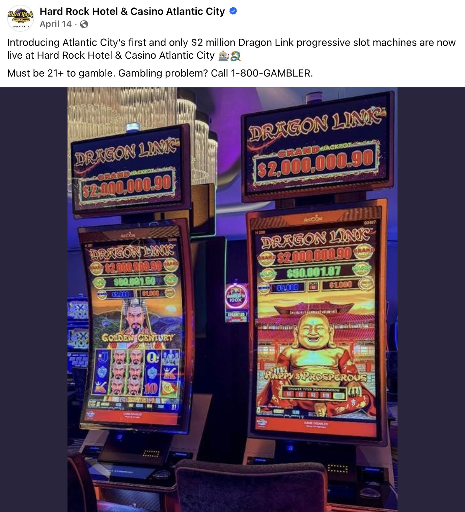

AC Action Report Analysis
Why Dragon Link Turns “I'll Just Play for 20 Minutes” Into a Full Night
Estimated Reading Time: 5 Minutes
Every Atlantic City regular knows exactly how this goes.
You’re walking past a Dragon Link bank on the way to dinner when a gong suddenly fires across the casino floor. Heads turn. A small crowd gathers behind the chairs.
You glance up at the climbing progressives and immediately think:
"Maybe I’ll sit down for a little."
That’s how it starts.
Not with dreams of a life-changing jackpot. Usually it begins with a couple hundred bucks and a harmless plan to play for twenty or thirty minutes.
Then time quietly disappears.
An hour later you’re still there.
The machine almost triggered twice. The woman next to you hit a Minor. Another terminal in the bank looks hotter. You switch seats and tell yourself you'll leave after one more Hold & Spin.
Then the Orbs start landing.
Why Dragon Link Feels Different
This is the genius of the game.
It doesn’t need constant wins to keep you playing. It just needs to create the feeling that something good is always close: a progressive ticking upward, a near-trigger on Hold & Spin, or a random Orb drop that suddenly makes the next few spins feel important again.
The session never fully feels dead.
That psychological edge is exactly why Dragon Link and its linked-progressive cousins dominate Atlantic City casino floors right now.
What the Numbers Show
The latest NJ DGE jackpot reports make the trend impossible to ignore.
In the last 30 days alone, Atlantic City casinos paid out 380 jackpots over $40,000 totaling more than $37 million. Year-to-date, the market has generated nearly $180 million in jackpots, including nine wins over $1 million.


The same names dominate the reports month after month:
- Dragon Link
- Dragon Cash
- Huff N' Puff
- Panda Magic
- Dancing Drums Link
- Happy and Prosperous
- Buffalo Link
- Golden Century
- Cash Eruption
These games create long, sticky sessions and the numbers prove it.

Why Casinos Keep Expanding These Games
Atlantic City casinos are leaning into the trend aggressively.
Earlier this year, Hard Rock Atlantic City introduced the city's first $2 million Dragon Link progressive bank, turning the machines themselves into headline attractions before players even sit down.
That move says a lot about where modern casino-floor strategy is heading.
These linked-progressive sections are no longer treated like ordinary slot banks hidden in the corner of the floor. Casinos increasingly position them as centerpiece attractions designed to pull players in, keep energy high, and create marathon-length sessions.

YouTube has fueled the rise as well.
Slot influencers have built massive audiences around Dragon Link and similar games because they naturally produce dramatic, watchable moments: giant progressives overhead, intense Hold & Spin chases, bonus teases, and loud handpays that instantly grab attention.
By the time many players arrive in Atlantic City, the machines already feel familiar and the chase has already started.
Walk through Borgata, Hard Rock, Ocean, or Caesars on a busy weekend night and you can feel it immediately.
The Dragon Link sections almost operate like mini casinos inside the casino itself.
Constant bonus sounds.
Players crowding behind occupied chairs.
Empty seats filling almost instantly.
Cocktail servers looping through nonstop.
Even people just walking by slow down when they hear somebody trigger Hold & Spin nearby.
Very few modern casino games create that kind of floor energy anymore.
What's In It For Players?
Here's why so many experienced Atlantic City players keep returning to these machines:
Dragon Link offers one of the better entertainment-plus-comp combinations on the floor.
You can sit at moderate bets for hours, stay fully engaged chasing Hold & Spins and climbing progressives, and quietly generate serious coin-in along the way, especially on 2x, 3x, 5x, or 10x multiplier days.
For players working toward Gold, Platinum, or Diamond status, that matters.
You get floor energy, constant action, drinks, and visual excitement while building tier credits, free play offers, food comps, and future room value in the background.
Unlike long blackjack or craps sessions, the experience rarely feels mentally exhausting.
The game keeps feeding just enough excitement back into the session to make staying feel easy.
The Trade-Off
Of course, the house edge is always working.
The same mechanics that keep the session exciting also soften the pain of losing.
Small wins, near misses, bonus sounds, and climbing progressives spread out the emotional experience, making it dangerously easy to stay longer than planned.
Most Atlantic City regulars know the feeling.
You finally look at the clock and realize dinner disappeared hours ago. Your drink is warm. Your bankroll is lighter than expected.
Yet somehow you're still thinking:
"One more bonus."
The Real Secret
Dragon Link doesn't dominate because it pays the most.
It dominates because it constantly convinces players that leaving right now would be a mistake.
Like the next Hold & Spin is close.
Like the Major is heating up.
Like the machine is finally about to turn.
And that's exactly how "I'll just play for twenty minutes" quietly turns into an entire night on the Atlantic City casino floor.
Related Reading:
Caesars Is Getting Bought. What This Means for Regular Players
Looking for More Atlantic City Casino Intelligence?
ACAR's Atlantic City Slot Payout Breakdown compares real New Jersey casino payout data across every major Atlantic City property and highlights which casino floors appear more playable than others.
The report is currently available free and includes property-by-property comparisons across the Atlantic City market.
Follow ACAR for Atlantic City & Regional Casino Intelligence, including casino-floor observations, promotion trackers, slot analysis, rewards-program coverage, and major casino-industry developments affecting players.